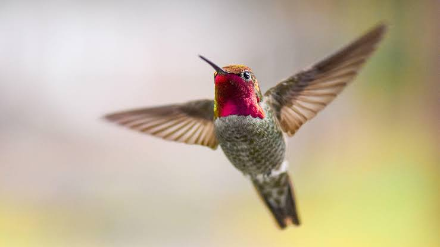

Hummingbird
Birds
Hummingbirds are birds native to the Americas and constituting the biological family Trochilidae. They are the smallest of birds, most species measuring 7.5–13 cm in length. The smallest extant bird species is the 5 cm bee hummingbird, which weighs less than 2.0 g
Lifespan: 3 – 5 years
Speed: 79 km/h (Maximum, Diving)
Scientific name: Trochilidae
Family: Trochilidae; Vigors, 1825
Mass: Bee hummingbird: 1.6 – 2 g,
Length: Bee hummingbird: 5 – 6.1 cm
Little birds with big appeal: Hummingbirds include the smallest birds in the world, but they belong to one of the largest group of birds, the Trochilidae family.
These enchanting birds are found in deserts, mountains, and plains, but most live in tropical rain forests. Their name refers to the humming sound made by their tiny, beating wings; each species creates a different humming sound, depending on the speed of its wing beats.
In the Caribbean, people call the hummingbird el zunzun. These energetic dynamos have been around for ages; hummingbird fossils found in Germany are said to be more than 30 million years old.
There are 328 hummingbird species. The smallest is the bee hummingbird from Cuba, and the largest is the giant hummingbird from South America. Hummingbird bills come in different sizes and shapes, too.
The long, slender bill is adapted to collect nectar from flowers. The bill protects the long, split tongue and allows each hummingbird species to feed from specific types of flowers.
Hummingbirds are called nectivores, because about 90 percent of their diet is the nectar from flowers. They also snack on insects, which they often catch by “hawking.” A hummingbird “hawks” insects by flying and diving to snap them up out of the air.
Biology of Hummingbird
Evolution
A map of the hummingbird family tree – reconstructed from analysis of 284 of the world's 338 known species – shows rapid diversification from 22 million years ago.
Hummingbirds fall into nine main clades, the topazes, hermits, mangoes, brilliants, coquettes, Patagona, mountain gems, bees, and emeralds, defining their relationship to nectar-bearing flowering plants and the birds' continued spread into new geographic areas.
While all hummingbirds depend on flower nectar to fuel their high metabolisms and hovering flight, coordinated changes in flower and bill shape stimulated the formation of new species of hummingbirds and plants. Due to this exceptional evolutionary pattern, as many as 140 hummingbird species can coexist in a specific region, such as the Andes range.
The hummingbird evolutionary tree shows ancestral hummingbirds splitting from insectivorous swifts (family Apodidae) and treeswifts (family Hemiprocnidae) about 42 million years ago, probably in Eurasia.
One key evolutionary factor appears to be an altered taste receptor that enabled hummingbirds to seek nectar. By 22 million years ago the ancestral species of current hummingbirds became established in South America, where environmental conditions stimulated further diversification.
The Andes Mountains appear to be a particularly rich environment for hummingbird evolution because diversification occurred simultaneously with mountain uplift over the past 10 million years. Hummingbirds remain in dynamic diversification inhabiting ecological regions across South America, North America, and the Caribbean, indicating an enlarging evolutionary radiation.
Within the same geographic region, hummingbird clades co-evolved with nectar-bearing plant clades, affecting mechanisms of pollination.
The same is true for the sword-billed hummingbird (Ensifera ensifera), one of the morphologically most extreme species, and one of its main food plant clades (Passiflora section Tacsonia).
Sexual dimorphisms
Hummingbirds exhibit sexual size dimorphism according to Rensch's rule, in which males are smaller than females in small species, and males are larger than females in large-bodied species.
The extent of this sexual size difference varies among clades of hummingbirds. For example, the Mellisugini clade exhibits a large size dimorphism, with females being larger than males.
Conversely, the Lophomithini clade displays very little size dimorphism; males and females are similar in size. Sexual dimorphisms in bill size and shape are also present between male and female hummingbirds, where in many clades, females have
longer, more curved bills favored for accessing nectar from tall flowers. For males and females of the same size, females will tend to have larger bills.
Sexual size and bill differences likely evolved due to constraints imposed by courtship because mating displays of male hummingbirds require complex aerial maneuvers.
Males tend to be smaller than females, allowing conservation of energy to forage competitively and participate more frequently in courtship. Thus, sexual selection will favor smaller male hummingbirds.
Heat dissipation
The high metabolic rate of hummingbirds – especially during rapid forward flight and hovering – produces increased body heat that requires specialized mechanisms of thermoregulation for heat dissipation, which becomes an even greater challenge in hot, humid climates.
Hummingbirds dissipate heat partially by evaporation through exhaled air, and from body structures with thin or no feather covering, such as around the eyes, shoulders, under the wings (patagia), and feet.
While hovering, hummingbirds do not benefit from the heat loss by air convection during forward flight, except for air movement generated by their rapid wing-beat, possibly aiding convective heat loss from the extended feet.
Smaller hummingbird species, such as the calliope, appear to adapt their relatively higher surface-to-volume ratio to improve convective cooling from air movement by the wings.
When air temperatures rise above 36 °C (97 °F), thermal gradients driving heat passively by convective dissipation from around the eyes, shoulders, and feet are reduced or eliminated, requiring heat dissipation mainly by evaporation and exhalation.
In cold climates, hummingbirds retract their feet into breast feathers to eliminate skin exposure and minimize heat dissipation.
Kidney function
The dynamic range of metabolic rates in hummingbirds requires a parallel dynamic range in kidney function. During a day of nectar consumption with a corresponding high water intake that may total five times the body weight per day, hummingbird kidneys process
water via glomerular filtration rates (GFR) in amounts proportional to water consumption, thereby avoiding overhydration. During brief periods of water deprivation, however, such as in nighttime torpor, GFR drops to zero, preserving body water.
Hummingbird kidneys also have a unique ability to control the levels of electrolytes after consuming nectars with high amounts of sodium and chloride or none, indicating that kidney and glomerular structures must be highly specialized for variations in nectar
mineral quality. Morphological studies on Anna's hummingbird kidneys showed adaptations of high capillary density in close proximity to nephrons, allowing for precise regulation of water and electrolytes.
Flight stability
During turbulent airflow conditions created experimentally in a wind tunnel, hummingbirds exhibit stable head positions and orientation when they hover at a feeder.
When wind gusts from the side, hummingbirds compensate by increasing wing-stroke amplitude and stroke plane angle, and by varying these parameters asymmetrically between the wings and from one stroke to the next. They also vary the orientation and enlarge the collective surface area of their tail feathers into the shape of a fan.
While hovering, the visual system of a hummingbird is able to separate apparent motion caused by the movement of the hummingbird itself from motions caused by external sources, such as an approaching predator.
In natural settings full of highly complex background motion, hummingbirds are able to precisely hover in place by rapid coordination of vision with body position.
Lifespan
Hummingbirds have long lifespans for organisms with such rapid metabolisms. Though many die during their first year of life, especially in the vulnerable period between hatching and fledging, those that survive may occasionally live a decade or more. Among the better-known North American species, the average lifespan is probably 3 to 5 years.
For comparison, the smaller shrews, among the smallest of all mammals, seldom live longer than 2 years. The longest recorded lifespan in the wild relates to a female broad-tailed hummingbird that was banded (ringed) as an adult at least one year old,
then recaptured 11 years later, making her at least 12 years old.[citation needed] Other longevity records for banded hummingbirds include an estimated minimum age of 10 years 1 month for a female black-chinned hummingbird similar in size to the broad-tailed hummingbird, and at least 11 years 2 months for a much larger buff-bellied hummingbird.